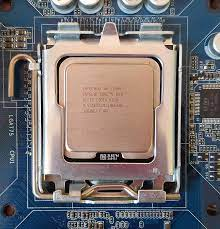
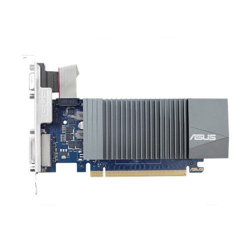
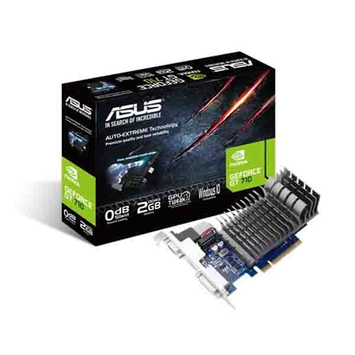
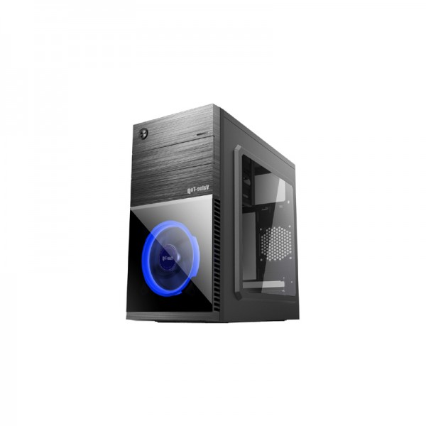

my pc setup
the websit power by tahmid
my pc processor
Core 2 Duo notebook processor (CPU)
The Intel Core 2 Duo (also known as Core2 Duo) notebook processor is a 64 bit dual core processor. This means two processor cores work inside a Core 2 Duo in parallel.
The Core 2 Duo, which was introduced on July 27 2006, is the direct successor of the Core Duo. Each core is based on the Pentium M micro architecture. Compared with the old Netburst architecture of the Pentium 4, the cores in the Core 2 Duo have shorter pipelines. As a result, the maximum clock rate is lower but the performance per clock is significantly higher. Thus a Pentium 4M with the same clock rate is up to 40% slower.
Both, the notebook Core 2 Duo and the desktop Core 2 Duo are based on the same processor. However, the notebook version runs with a lower voltage (0.95 to 1.188 volt) and a lower front side bus (1066 vs. 667 MHz). As a result (and because of slower laptop hard discs) the performance of notebooks is about 20% lower than their desktop counterparts with the same clock rate.

My Graphics Card
My Graphics Card name is Asus Graphics Crad Geforce Gt 710 2GB DDR3.NVIDIA Geforce GT 710 Asus Graphics Card,Graphics Engine Model- Asus 710-2-SL, Interface Bus - Pcl Epress 2.0, Endineclock- Base-954MHZ Memory Clock-1800MHZ,Mamore Size 2GB,Memory Type-DDR3 Mamory Bus 64-bit,Resolution Dvi Max Resolution:2560x1600,Directx 12,Opengl-4.4,VGA Port -1,Dvi Port-1,Hdmi Port-1,HDCP Support-Yes,Warranty-2 Years.


Value Top VT-R855-L Blue LED ATX Desktop Casing (200W PSU)
Details
Model – Value Top VT-R855-L, Supported Mainboard Type – ATX, Micro-ATX, Mini-ITX, Front USB port – 1 x USB3.0, 1 x USB2.0, Cooling Fan (Built-In) – 2, Power Supply Type – 200W PSU, Others – Blue LED ATX Desktop Casing, 1 x 80mm Fan & 1 x 120mm Blue LED Halo Fan, Country of Origin – China, Made in/ Assemble – China.
